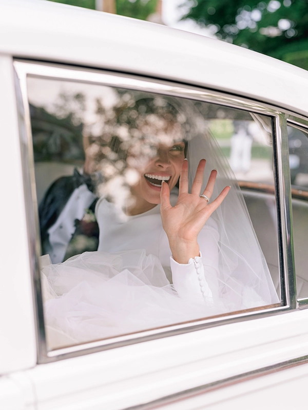
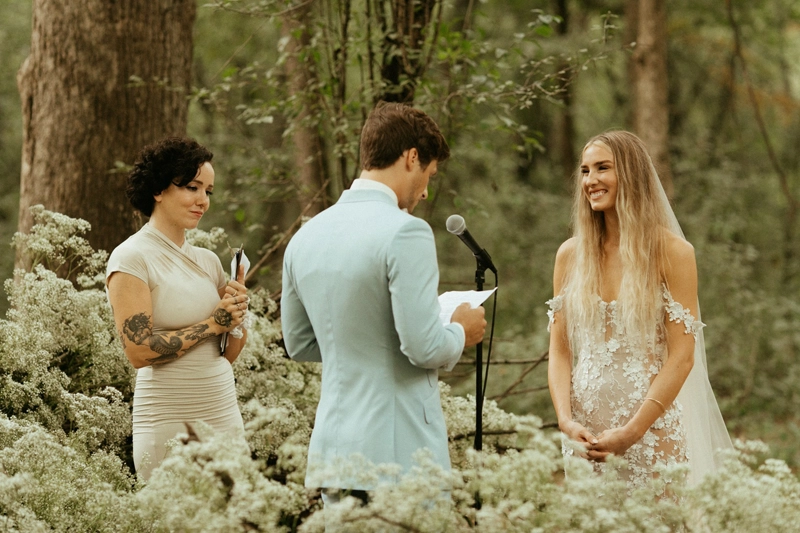
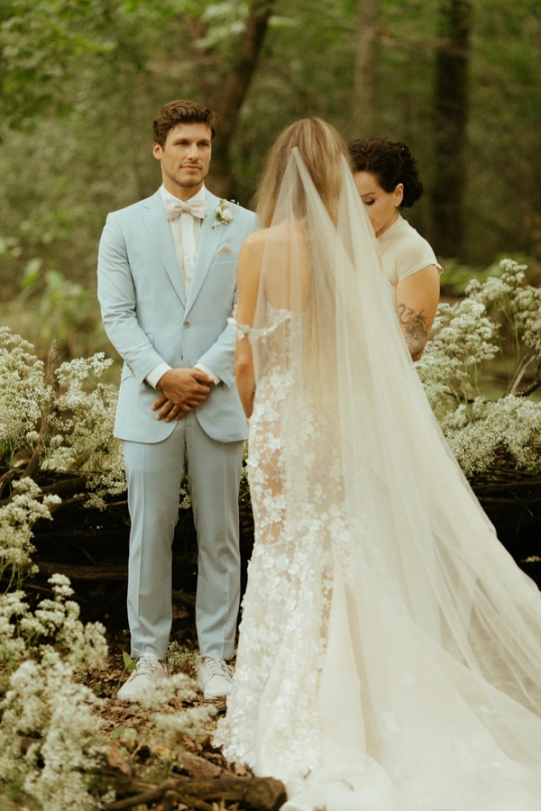
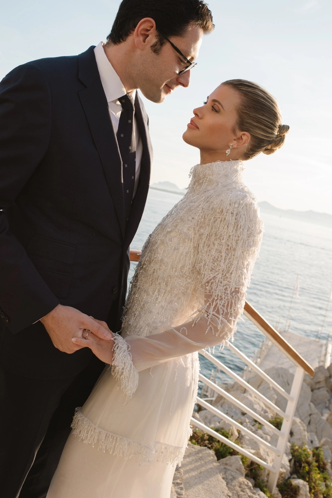
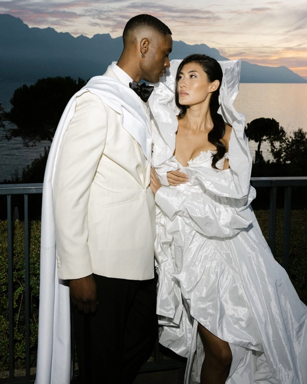
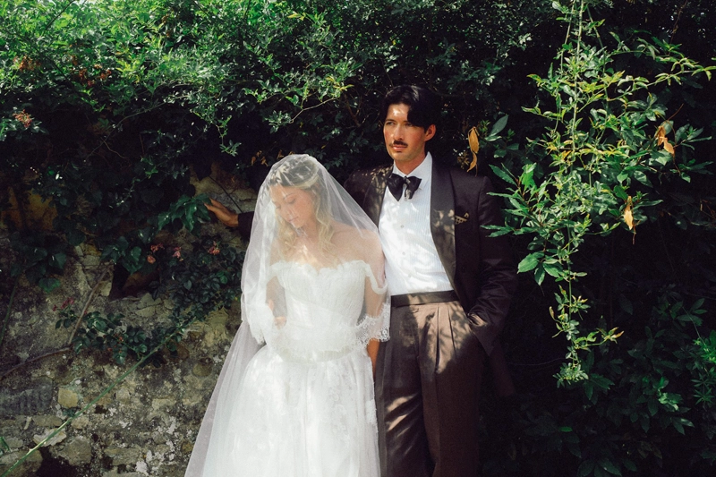
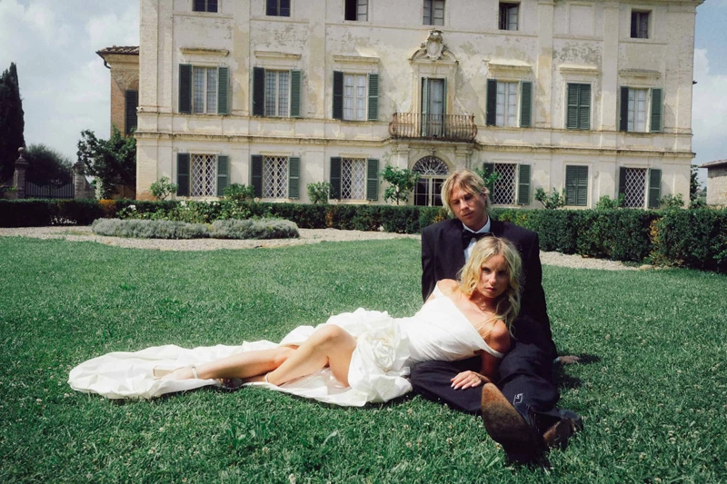
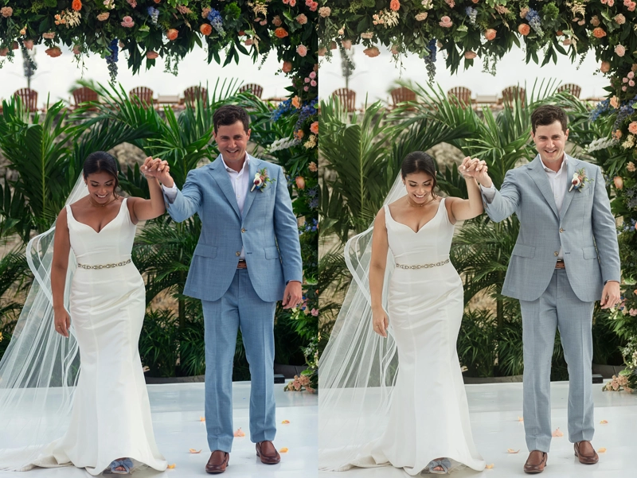
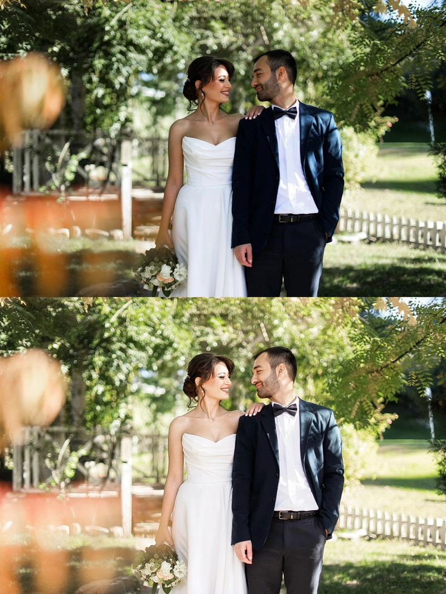
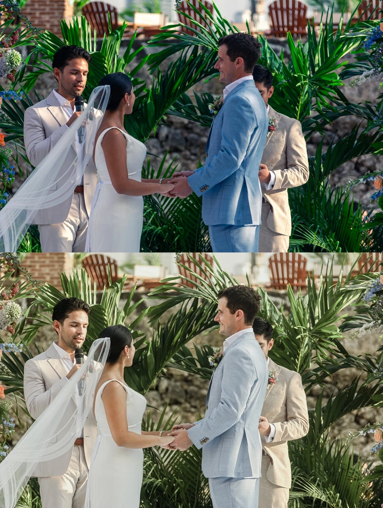

There was a time when wedding photography was about perfection — spotless dresses, flawless skin, perfectly posed smiles. Today, something has shifted.
The most compelling wedding images no longer feel staged. They feel lived in.
A slightly wrinkled veil caught in the wind. Makeup softened after hours of laughter. A blurred movement on the dance floor. These are no longer “mistakes” — they are the moments couples recognize as real. And increasingly, these are the images they value the most.
The Shift from Perfection to Presence
Modern wedding photography is moving away from control and toward emotion. Photographers are documenting energy instead of directing it.
You can see it in:
- Motion blur used intentionally
- Direct flash recreating a raw, almost nostalgic aesthetic
- Film-inspired color grading with muted tones and soft contrast
- Imperfect compositions that feel spontaneous rather than constructed
The result is imagery that feels closer to memory than to a polished production.
The Influence of Fashion and Editorial
Wedding photography is no longer isolated from the rest of the visual world. It borrows heavily from fashion, cinema, and even social media aesthetics.
Editorial-style posing, bold cropping, unconventional lighting — all of this is finding its way into wedding galleries. Couples are not just asking for documentation; they want images that could belong in a magazine, while still feeling deeply personal. This creates an interesting tension: how to combine authenticity with artistic direction.
Color Is Becoming a Signature
One of the strongest trends right now is the use of color as identity.
Some photographers lean into warm, golden palettes that feel nostalgic and intimate. Others explore cooler, desaturated tones that evoke calm and minimalism. There’s also a growing appreciation for true-to-life color — not overly stylized, but carefully balanced.
Consistency across the gallery has become more important than ever, not as a technical requirement, but as part of storytelling. The color defines the emotional tone of the entire wedding.
The Rise of Recognizable Color Styles
Over the past decade, color grading in wedding photography has evolved into distinct, recognizable styles.
-
“Light & Airy”
Soft whites, lifted shadows, pastel tones. Popularized in the early 2010s and strongly associated with photographers like KT Merry and Jose Villa, this style was built on medium format film aesthetics. It defined luxury wedding imagery for years and still remains relevant, though now often toned down for more contrast and depth.

-
“Dark & Moody”
originally defined by deep shadows, rich greens, and dramatic contrast — emerged as a counter-trend to “Light & Airy” around 2016–2018, drawing inspiration from fine art and cinematic storytelling.
However, over time, the aesthetic has evolved. What once relied on heavy contrast and depth has gradually shifted toward a softer, more nuanced interpretation. Photographers like India Earl have played a key role in this transformation, moving toward muted tones, pastel undertones, and film-inspired color grading. What might appear at first glance as “flattened” or simplified color is, in reality, a deliberate stylistic choice.

Many contemporary photographers now embrace olive-leaning tones, reduced color separation, and softened contrast to create a more atmospheric, film-like aesthetic. Rather than aiming for perfectly clean digital gradients, this approach allows colors to blend and subtly shift, creating a slightly faded, textured feel — something closer to memory than to precision.
Today, what was once considered “dark & moody” often feels lighter, more organic, and emotionally driven — blending depth with softness rather than relying on contrast alone.

-
“True-to-Life / Editorial Natural”
Currently one of the leading directions.
Colors are balanced, skin tones remain accurate, and contrast is subtle. This approach reflects the influence of fashion photography and brands like Vogue-style editorials. It has grown significantly in the last 3–5 years as clients became more visually sophisticated.

-
“Direct Flash / 90s Nostalgia”
High contrast, visible flash, slightly harsh highlights, sometimes mixed with cooler tones. Inspired by paparazzi shots and early digital cameras, this trend has rapidly gained popularity through social media and modern editorial wedding photographers.

-
Film Emulation (Portra-inspired tones)
particularly inspired by Kodak Portra — remains one of the most influential directions in modern wedding photography. Originally designed for portrait and wedding use, Portra film is known for its soft contrast, natural skin tones, and balanced color palette, qualities that continue to define contemporary editing styles.

Today, its influence extends far beyond analog photography. Digital tools, presets, and even physical filters are actively built to replicate the Portra look, reflecting its lasting impact on the industry. Rather than perfectly clean digital color, this aesthetic embraces subtle shifts — warm skin tones, muted greens, and gently faded highlights — creating a look that feels organic, timeless, and emotionally resonant.

What’s important is not just the existence of these styles — but how they are constantly blending. A single wedding gallery today might combine editorial flash, natural tones, and film-inspired softness, depending on the moment. Color is no longer a preset. It’s a narrative tool. And photographers leading trends today are not those who follow one style — but those who know how to adapt it without losing their identity.
The Return of Texture and Detail
Skin is no longer over-smoothed. Fabrics retain their natural folds. Grain, noise, and subtle imperfections are often preserved — or even added — to create depth. Luxury, today, is not about looking artificial. It’s about feeling tactile. You can almost sense the weight of the dress, the softness of the light, the atmosphere of the room.

The Invisible Collaboration Behind the Image
As visual expectations grow, so does the complexity behind achieving this “effortless” look. Maintaining consistent color across hundreds of images, preserving natural skin tones in mixed lighting, balancing whites without losing texture — all of this requires precision that goes beyond basic editing. This is where a professional retoucher becomes not a service, but a creative partner. In modern workflows, retouchers often:

- Translate and refine a photographer’s color signature across full galleries
- Maintain consistency between different lighting environments
- Protect natural skin texture while subtly enhancing it
- Support high-volume delivery without compromising quality
The collaboration is quiet, often invisible — but essential. Because the difference between a good gallery and a memorable one is rarely a single image. It’s the consistency, the rhythm, the feeling that everything belongs together. If you’re looking to elevate your workflow, maintain consistency, and deliver a truly premium product, investing in a skilled retoucher may be one of the most impactful decisions you make for your business.
